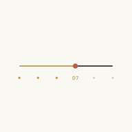
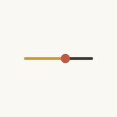
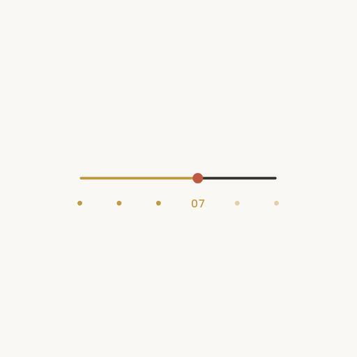
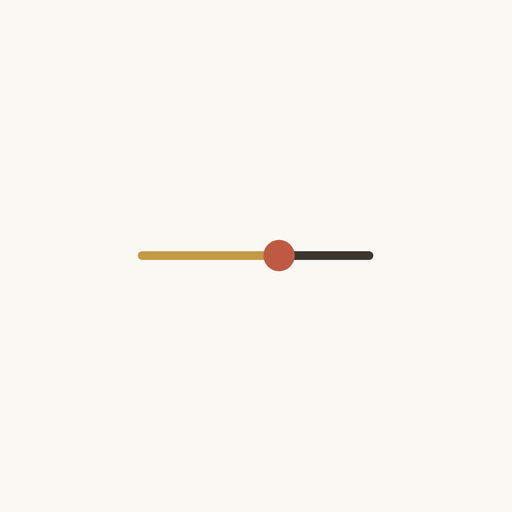

Icon Lab
PWA 图标 A/B 对比
屏幕上的预览只能排除明显不行的方案，最终还得看真机桌面。 下面两个入口分别用「分享 → 添加到主屏幕」装一次，桌面上就会出现「刻度A」「刻度B」两个图标， 和正装的「波普账本」并排比。现役正式图标是候选 B（v4b），改主意就把引用换成另一版。
装到桌面
模拟主屏（图标为真实 60pt）
刻度A
刻度B
旧版水墨
尺寸阶梯 40 / 60 / 120


圆形遮罩（Android 自适应图标用 maskable 版）


换图标要记得
iOS 按 URL 死缓存主屏图标，改画面必须换文件名。所以每套图都带版本后缀，
由 scripts/generate_icons.py 从 1024 母图统一派生。
定稿后改三处引用即可：index.html 的 icon / apple-touch-icon、
manifest.webmanifest 的 icons、vite.config.js 的 stablePwaAssets。